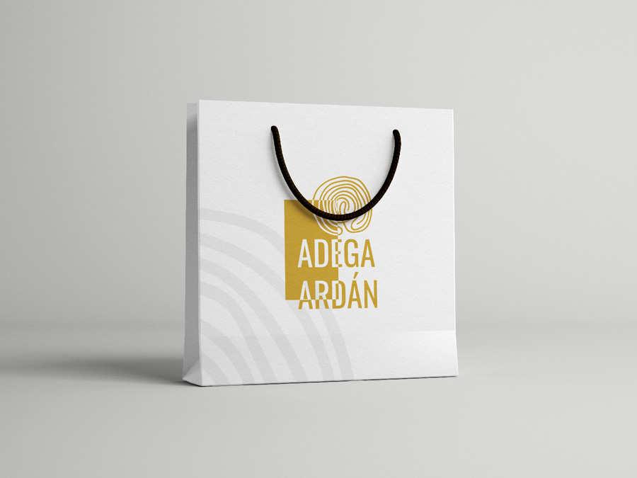

Design & <Code>
PRODUCTO

DESARROLLO WEB
DISEÑO WEB
MARKETING DIGITAL
DIRECCIÓN DE ARTE
DISEÑO GRÁFICO
IA GENERATIVA
ILUSTRACIÓN
Soy Xeila,
Diseñadora web, recién titulada en desarrollo web con años de experiencia entendiendo las necesidades de los usuarios antes de diseñar para ellos.
Creo experiencias digitales desde el concepto al código, fáciles de entender, accesibles y usables de principio a fin.